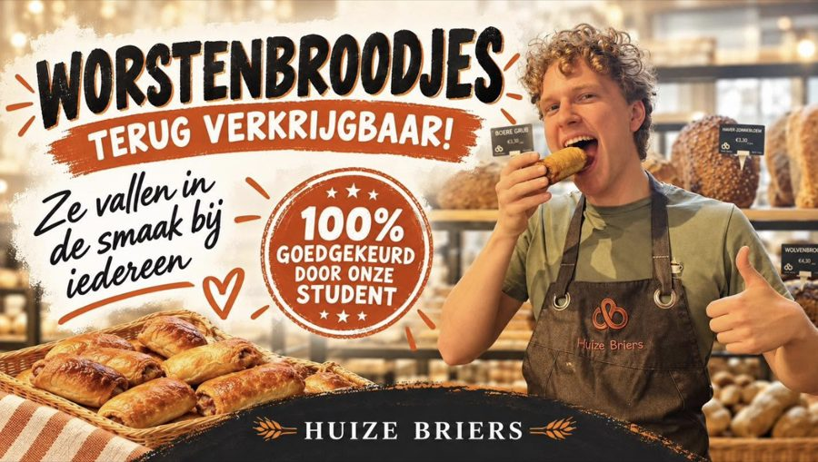
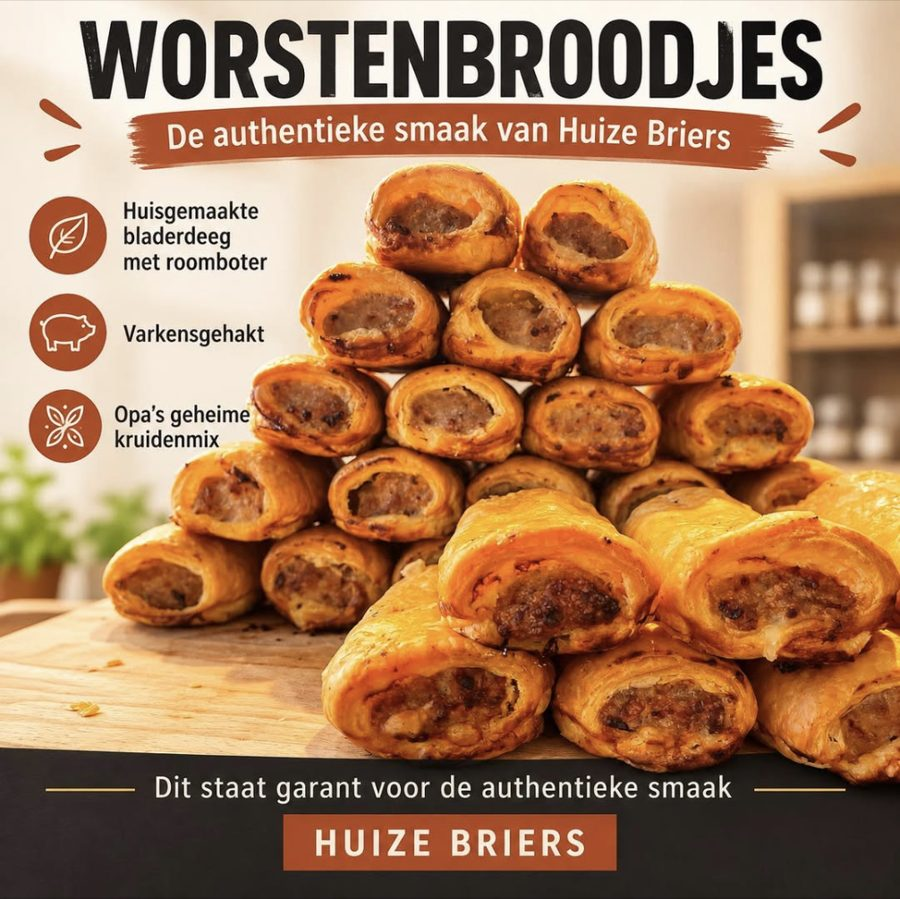
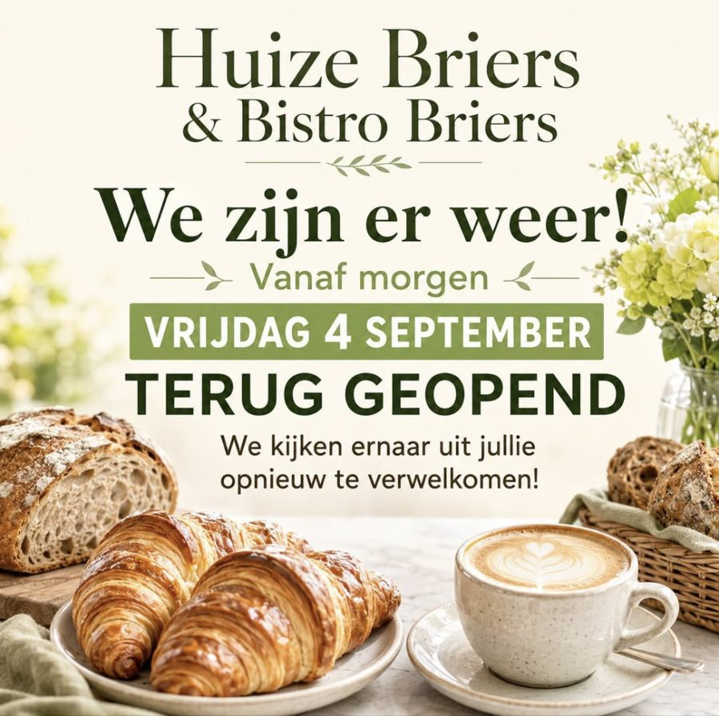
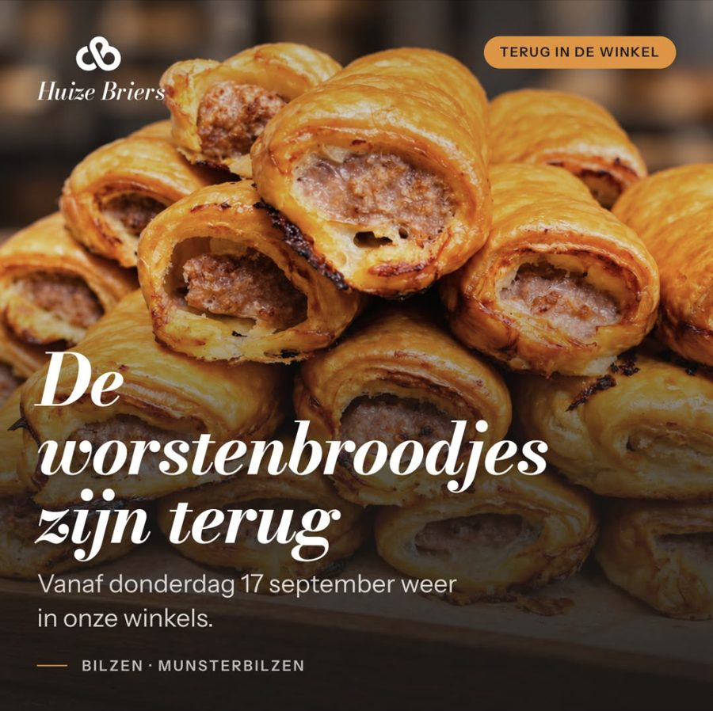
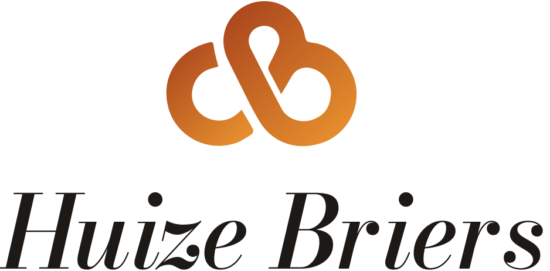

Zo maken we een post
Elke post van Huize Briers volgt dezelfde regels, wie hem ook maakt en met welke AI. Volg de vier stappen hieronder.
-
Geef de regels aan je AI
Kopieer de startzin en plak hem als eerste bericht in ChatGPT, Claude, Gemini of Copilot.
Kan je AI geen links openen? Gebruik dan de tweede knop en plak de volledige regels.
-
Zeg wat je wil posten
Geef het product, de datum en de winkel. Hoe concreter, hoe beter: wat zit erin, wie maakt het, vanaf wanneer ligt het er.
Je krijgt een kop, een praktische regel, een caption, een fotovoorstel en één tip terug.
-
Neem een echte foto
Gebruik altijd een eigen foto van het echte product. Laat AI nooit een product, een persoon of de winkel verzinnen.
Zet de kop en de praktische regel op de foto volgens de beeldregels. Het logo komt uit de bestanden hieronder en wordt nooit nagetypt.
-
Controleer voor je post
Staat er één boodschap op, één keer gezegd? Kloppen de datum en de winkel? Zou je het zo aan de toonbank zeggen? Dan mag hij online.
Voorbeelden
Vier echte posts van ons. De eerste drie volgen de huisstijl niet, de vierde komt in de buurt.

- Persoon en winkel zijn door AI verzonnen
- Vijf lettertypes, stempel, borstelstreken
- Logo nagemaakt in plaats van het echte bestand

- De worstenbroodjes zijn niet de onze
- "Authentieke smaak" staat er twee keer
- Iconen, banner en een verzonnen logo

- Groen zit niet in ons palet
- Ander lettertype, logo getypt
- Croissants en koffie door AI gemaakt

- Echt logo, juiste lettertypes, één foto
- Nog te verbeteren: de boodschap staat er drie keer
- Nog te verbeteren: de kop bedekt het product
Logo's
Gebruik alleen deze bestanden. Op een foto of een donker vlak neem je altijd een witte versie.
Vrije ruimte, kleuren, lettertypes en toepassingen staan in de volledige gids.












Alle regels
Dit is de tekst die de AI leest. Ze staat in regels.md; pas je dat bestand aan, dan verandert deze pagina mee.
De regels worden geladen.